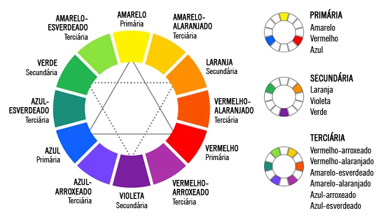

Classificação das Cores
Todas as cores apresentam três importantes características:
Matiz: é o que define as tonalidades das cores, por exemplo, o amarelo, o verde e o roxo são matizes. Dessa forma, conclui-se que todas as cores são matizes, sejam primárias, secundárias ou terciárias.
Tom: corresponde à quantidade de luz presente na cor, classificadas em tonalidades claras e escuras. Dessa forma, quando se acrescenta preto a um matiz, ela fica com uma tonalidade mais escura e do contrário, se acrescentarmos branco a uma cor, ela fica com uma tonalidade mais clara, por exemplo, quando misturamos o vermelho e o branco, atingimos uma tonalidade mais clara, ou a matiz rosa
Intensidade: A intensidade determina a presença de brilho na cor e podem ser consideradas fracas (baixa) ou fortes (alta), por exemplo, a cor amarela possui uma tonalidade forte ou alta em comparação com a cor marrom, mais opaca, e, portanto, de fraca intensidade.
As cores são classificadas em:
Cores Primárias: As cores primárias, são chamadas de “cores puras”, pois não podem ser obtidas pela mistura de outras cores. São três as cores primárias, vermelho, amarelo e azul, das quais surgem as outras tonalidades.
Cores Secundárias: A união de duas cores primárias, representam as três cores secundárias: verde (azul e amarelo), laranja (amarelo e vermelho) e roxo ou violeta (vermelho e azul)
Cores Terciárias: As cores terciárias, surgem da mistura de uma cor primária e outra secundária. A partir disso, as cores terciárias são: vermelho-arroxeado (vermelho e roxo) e vermelho-alaranjado (vermelho e laranja); amarelo-esverdeado (amarelo e verde) e amarelo-alaranjado (amarelo e laranja); azul-arroxeado (azul e roxo) e azul-esverdeado (azul e verde)
Círculo Cromático
O Círculo Cromático ou Círculo de Cores é composto por doze cores, onde:
- Azul
- Amarelo
- Vermelho
- Verde
- Laranja
- Roxo
- Vermelho-arroxeado
- Vermelho-alaranjado
- Amarelo-esverdeado
- Amarelo-alaranjado
- Azul-arroxeado
- Azul-esverdeado